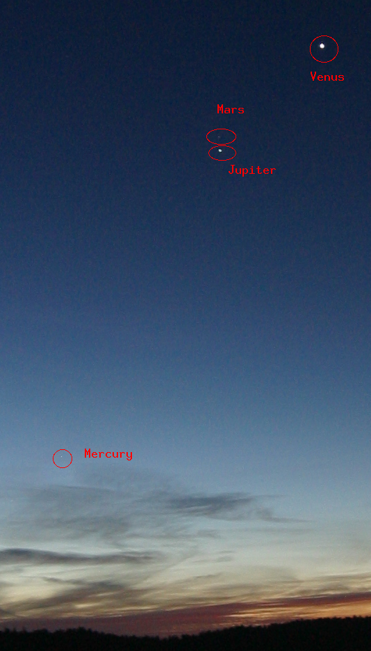

Summary: I photographed Jupiter, Venus, Mars, and Mercury at 0700 on Oct 16, 2015.
Back on October 16, 2015 I took an image of the Jupiter and Mars conjuction. Venus and Mercury were also visible. The planets appear quite small so I highlighted them in the second image. Next time, a longer lens!

